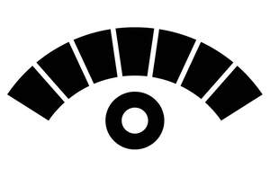

Trade Mark Journal No.2026/010 6 March 2026
UK00004342256 18 February 2026 (36,42)

- Class 36
- Valuation relating to the surveying of buildings.
- Class 42
- Surveying; Hydrographic surveying; Engineering surveying; Surveying [engineering]; Topographical surveying; Geological surveying; Surveying of land; Land surveying; Topographic surveying; Surveying and exploration; Surveying boreholes; Surveying services; Technical surveying; Road surveying; Quantity surveying; Surveying (Quantity -); Aerial surveying services; Surveying and exploration services; Inspection of buildings [surveying]; Marine, aerial and land surveying; Marine surveying services; Land and road surveying; Building inspection services [surveying]; Research relating to marine surveying; Oil field surveying; Home inspection services [surveying]; Consultancy services relating to marine surveying; Conducting engineering surveys; Surveying of defective structures; Conducting geological surveys; Geophysical surveys; Well bore surveying services; Consultancy relating to geological surveys; Surveying of oil-bearing seams; Surveying of real estate; Exploitation [surveying] of oil fields; Geological surveys; Surveys (Geological -); Surveys (Land -); Land surveys; Oil-fields (Preparing surveys of -); Surveying of oil beds and fields; Geological surveys or research; Structural surveying via industrial rope access; Cartographic or thermographic measurement services by drone; Cartography and mapping; Oil-field surveys; Surveys (Oil-field -); Design of land surveys; Surveys (Conducting -); Design of geological surveys; Design of oil-field surveys; Topographic survey; Oil-beds (Preparing surveys of -); Mapping; Geological estimation and research; Minefields surveys; Airborne remote monitoring relating to scientific explorations; Geological probing of building plots; Technical planning and consulting in the field of light engineering; Consultancy in the field of construction drafting; Geological testing of building plots; Environmental surveys; Engineering consultancy relating to testing; Conducting sampling and analysis services to assess pollution levels; Consultancy in the field of architecture and construction drafting; Airborne remote sensing relating to scientific explorations; Analysis and testing services relating to electrical engineering apparatus; Cartography; Conducting feasibility studies relative to oil field exploration; Airborne remote monitoring relating to environmental explorations; Technological consultancy in the field of geology; Analysis and testing services in the field of oil exploration; Geological prospecting; Prospecting (Geological -); Research in the field of excavation; Geophysical exploration services; Seismic analysis services; Oceanographic prospecting services; Technical project planning in the field of engineering; Geo-seismic survey services; Provision of surveys [scientific]; Testing of apparatus in the field of electrical engineering; Photogrammetry services; Technical survey services; Research in the field of building construction; Computerised information services relating to geophysical measurement; Mapping services; Geophysical research services; Technical consulting in the field of environmental engineering; Research in the field of electrical engineering; Consultancy services relating to geophysics; Cartography services; Airborne remote sensing relating to environmental explorations; Geophysical exploration for the mining industry; Assessment in the field of science provided by engineers; Oil-bearing seams (Preparing surveys of -); Analysis services for oil-field exploration; Oil-field exploration (Analysis for -).
Laura Sullivan
Brian Sullivan